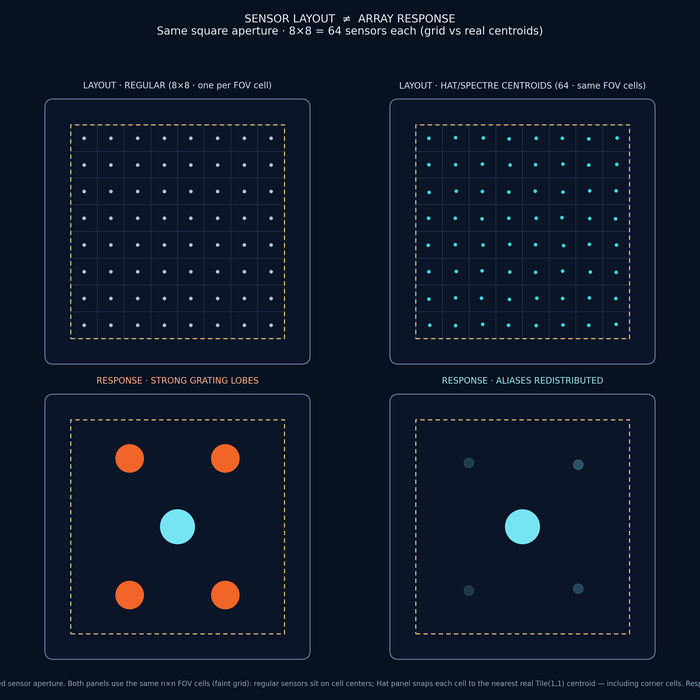

Signal processing and imaging
Deterministic non-periodic sampling layouts for reconstruction and sensor geometry.
Sampling without a repeating grid
Sampling means measuring a field at selected locations. On a regular grid, detail finer than the spacing can masquerade as a false coarse pattern: this is aliasing. In an antenna or microphone array, the analogous false directions are grating lobes—extra beams caused by repeated element spacing. Random layouts spread these errors but introduce variance. Aperiodic monotile layouts offer a deterministic third geometry with no translational lattice.[6]

Mordret and Grushin tested Hat-family arrays against periodic and other aperiodic baselines and reported improved aliasing behavior for the studied spatial-sampling tasks.[37] This is evidence for those array definitions, apertures, and metrics—not a universal theorem that every monotile sampling pattern is optimal. Tile centroids, vertices, or edges produce different point sets and spectra.
Evidence from array studies
Ref. 37 compares finite arrays through array-response functions and synthetic seismic beamforming—not image reconstruction. For roughly 310-sensor single-source arrays, favorable Tile(p) windows narrowed to p=0.41–0.43, 0.495–0.505, and 0.57–0.59, with sidelobes more than 2.5 times below the tested regular arrays. Hat and Turtle counterexamples show that aperiodicity alone is insufficient; the unusually uniform distance and azimuth distributions mattered.[37] A separate simulated Hat subarray retained about 90% aperture efficiency and grating lobes below −14 dB over ±18°; it has no fabricated-array validation.[38] A pending 85-element, 31-GHz SATCOM patent is a proposal, not experimental evidence.[68]

Benchmark design
Compare equal aperture, sensor count, minimum spacing, and noise budget. Baselines should include square and hexagonal grids, jittered grids, blue-noise or Poisson-disk samples, a random ensemble, and another deterministic aperiodic set. Repeat random baselines with multiple seeds.
- Imaging: reconstruction error, modulation transfer, artifact energy, robustness to missing sensors, and compute cost.
- Arrays: peak sidelobe and grating-lobe level, beam width, scan range, aperture efficiency, calibration sensitivity, and mutual coupling.
- Provenance: publish the canonical patch, selected point decoration, boundary mask, units, transforms, solver settings, and code.
Candidate experiments
- Sampling theory: compare monotile centroids against grids, jittered grids, blue noise, and Penrose point sets in reconstruction benchmarks
- Sensor arrays: radar, sonar, ultrasound, MRI, and CT geometry studies where periodic spacing can create directional ambiguities; each modality needs its own forward model.
- Compressed sensing: deterministic non-periodic measurement patterns with stable addressing
- Anti-aliasing masks and halftone screens; see Aliasing and Moiré
Limitations
No layout escapes sampling theory: insufficient density still loses information. Aperiodic arrays can have strong non-lattice spectral peaks, awkward wiring, edge bias, unequal nearest-neighbor spacing, and difficult calibration. Finite aperture and the chosen decoration may matter more than the tile theorem. Claims should therefore name the signal class, baseline, aperture, metric, and tested patch.
See also
Moiré, Aliasing, Waves, acoustics, and photonics
Categories: Research frontiers